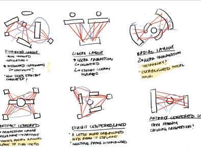
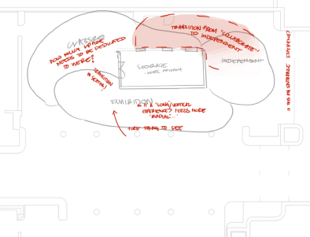
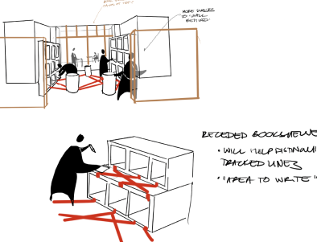
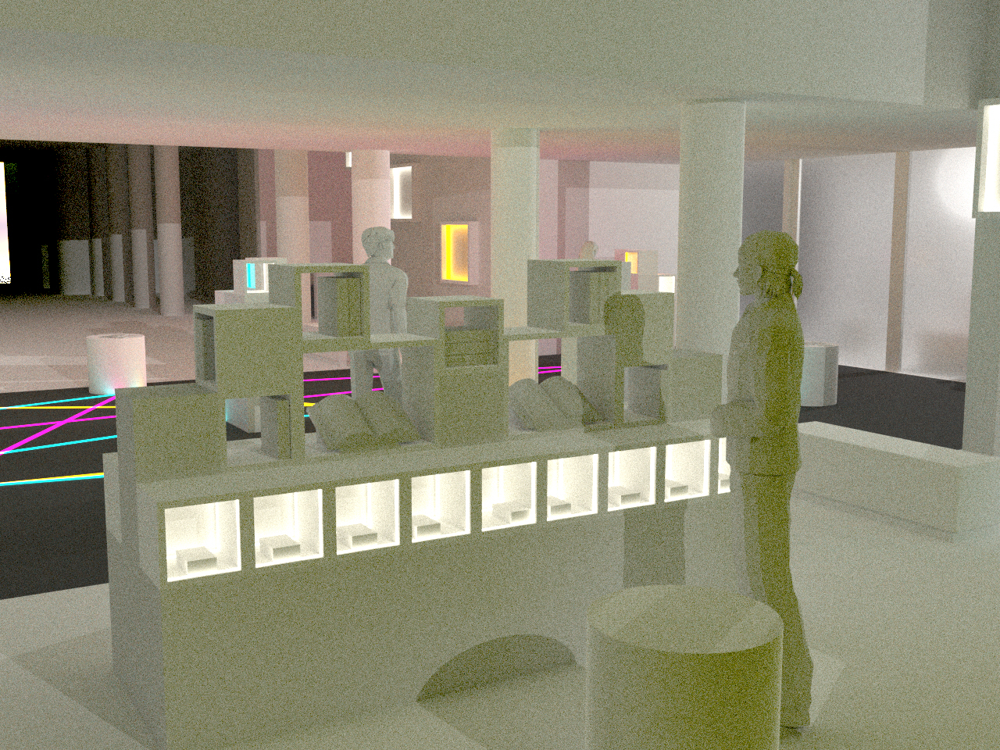
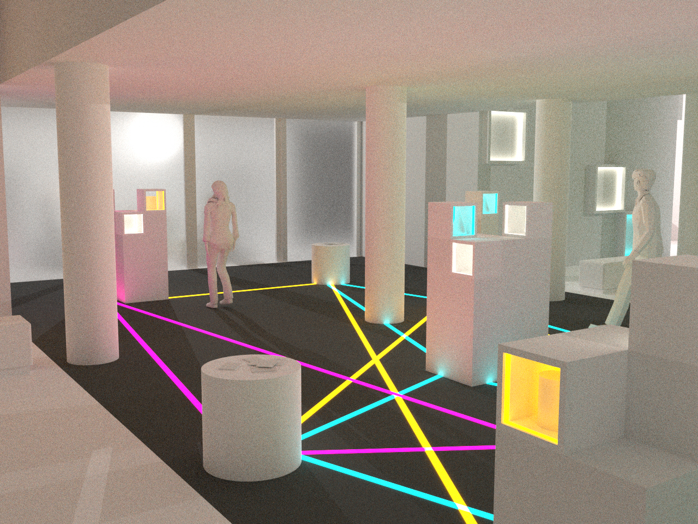
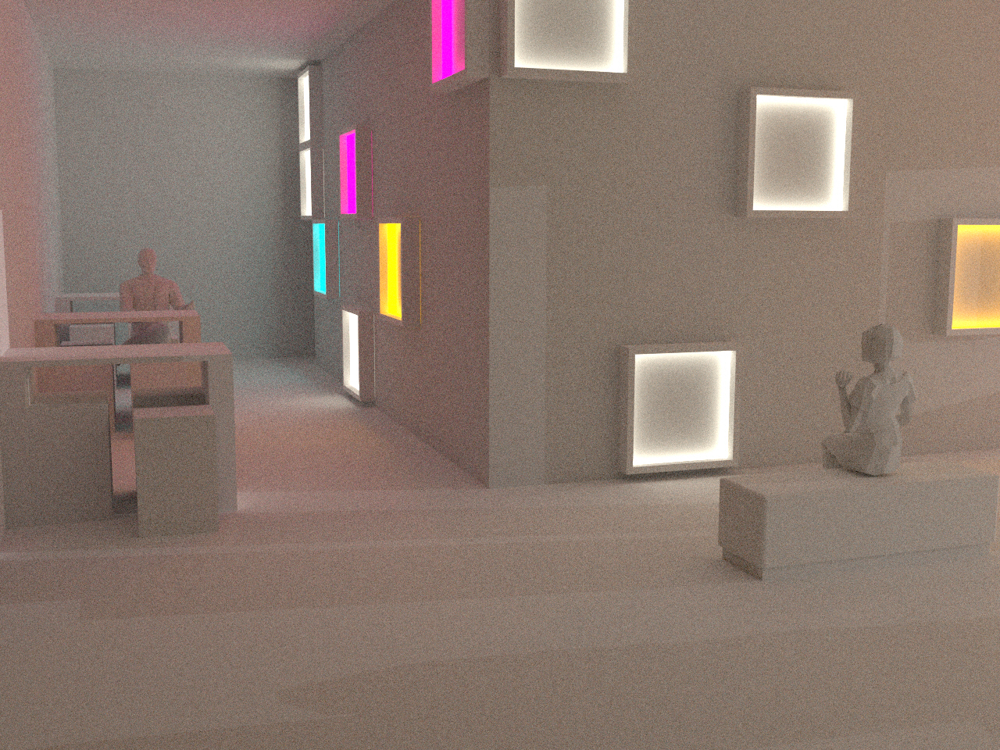
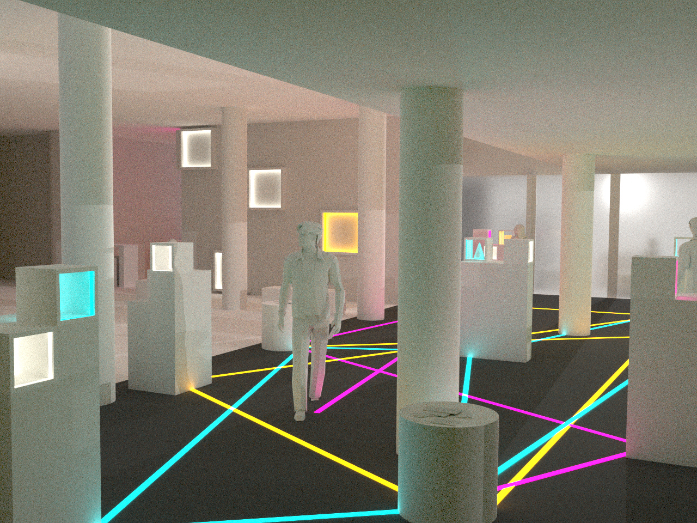

The (not so) bookclub
How can we encourage more students to make use of the library Archive, with an emphasis on finding artifacts relatable to their own practices.
Role : Designer, Prototyper
Duration: 5 weeks
Tools : Interaction Design, IoT, Unity C#, Projection Mapping, Rhino
Bringing the Bookclub to the Archive
Students today are disconnected from the library and its available resources – even more-so with the artifact collections. To address this, the project looks to bring back the interactions of the collaborative library experience with the archive, and represent the asynchronous conversation of text-people interactions in physical space through IoT and projection mapping.

What is the student library experience?
I initially surveyed students on campus their relationship with the library,
and how they use the library resources. Most users were generally in the
library to study, unaware of the resources available – including the archive.
From these surveys, this needed to be an experience that was seamless in their
current library use – which was mainly for studying and group meetings. How
can this be a natural interaction when entering the space that garners interest
for the archive?



Prototyping Interactions with IoT and Spatial Tracking
From these interactions came the prototyping phase – mainly connecting spatial input from Unity to a physical computing output with arduino. Because I wanted the interaction to be triggered from spatial data, I had to prototype as IoT, connecting ESP32’s directly to Unity and then peer to peer connection.


Engaging with conversation – from a single student to a class.
In the space is opportunity for students passing by Posner, to entire classes, to interact with this conversation. Students can interact with display cases of the archive collections and create tangible responses (whether with their own artifacts or writing) and physically connect them with each of these dispersed bookshelves.



